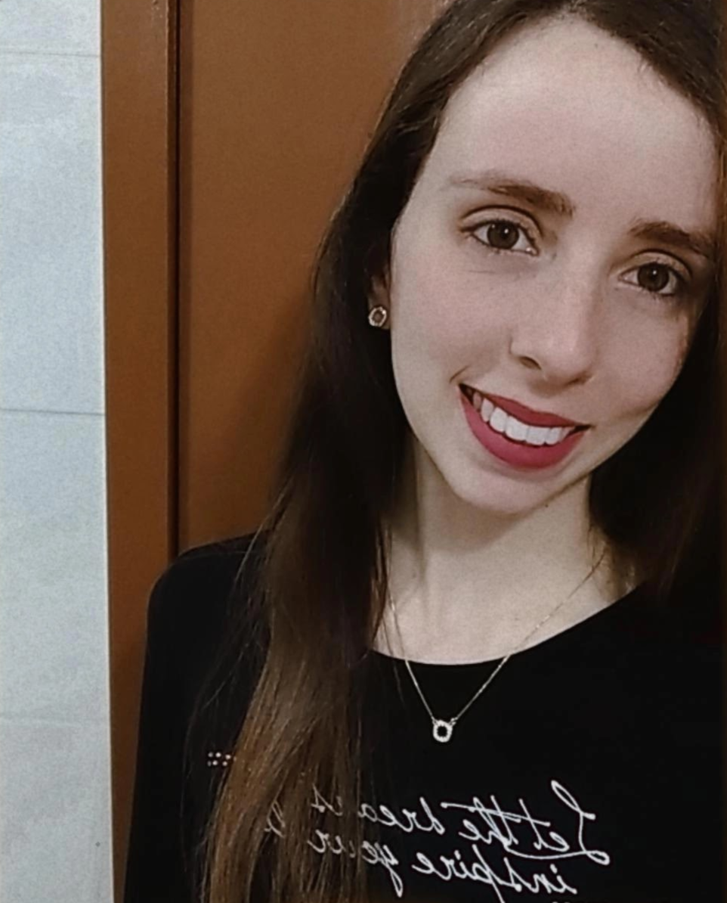

Ramoni de Matos Bauer

ENDEREÇO: Torres
TEL: (51) 99691-8821
E-MAIL: ramoni.bauer@rede.ulbra.br
WEBSITE: Linkedin
Crescimento profissional e pessoal,
Ensino médio completo, Escola E.E. B. Marechal Deodoro, conclusão em 2015.
Cursando Analise e Desenvolvimento de Sistemas – Ulbra Torres – 1ºsemestre.
Cursando Pós-Graduação em MBA Executivo em Administração Financeira – Faculdade Dom Alberto.
Bacharel em Administração – Ulbra Torres, conclusão em dezembro/2021.
Excel
Canvas
Python
Banrisul / 2018-2020 Cargo de estágio, desenvolvendo as atividades de atendimento bancário e rotinas de escritório.
Tottal Contabilidade / 2020 - atualmente Inicio como estagio, após efetivada como responsável pelo Departamento Fiscal.